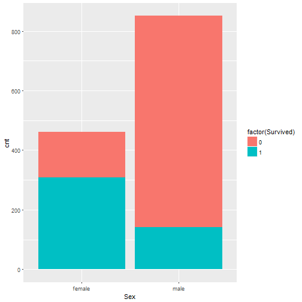
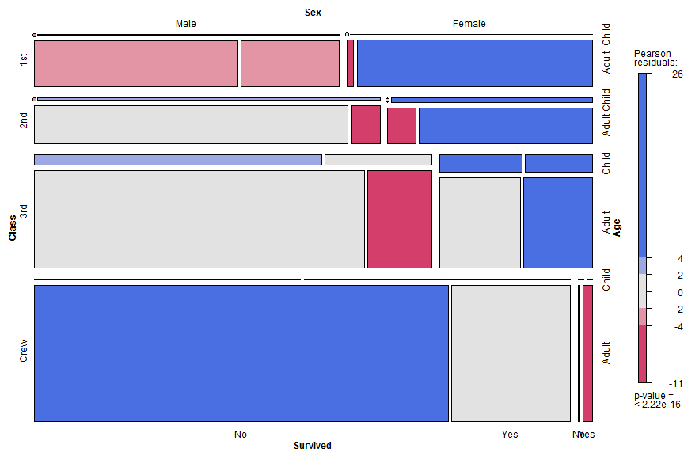
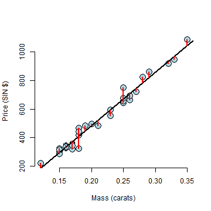
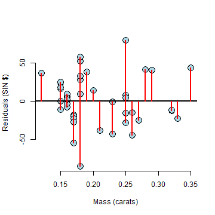
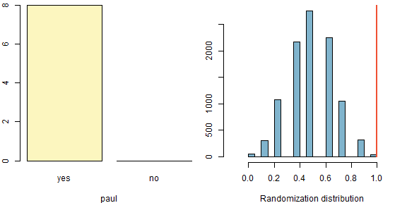

Martin在三年的数学学习中，共参加了10次考试，成绩如下：
{95，96，100，98，100，97，99，100，96，90}
- 我们应该如何描述他的成绩？
- 试着预测他下次的成绩。
- 第二个96改成69，再尝试回答上两个问题。
- 可以用更直观的方式描述他的成绩吗?
Ma Ming
Big Data Platform Architect and Data Scientist.
Martin在三年的数学学习中，共参加了10次考试，成绩如下：
{95，96，100，98，100，97，99，100，96，90}
Martin毕业到环境保护组织成为了一名数据分析师。 AirQuality Dataset
| Ozone | Solar.R | Wind | Temp | Month | Day |
|---|---|---|---|---|---|
| 41 | 190 | 7.4 | 67 | 5 | 1 |
| 36 | 118 | 8.0 | 72 | 5 | 2 |
| 12 | 149 | 12.6 | 74 | 5 | 3 |
| 18 | 313 | 11.5 | 62 | 5 | 4 |
| NA | NA | 14.3 | 56 | 5 | 5 |
| 28 | NA | 14.9 | 66 | 5 | 6 |

能不能有实际的数字呀，最好也有风速、温度之类的
Five Number
| Ozone | Solar.R | Wind | Temp | Month | Day | |
|---|---|---|---|---|---|---|
| Min. : 1.00 | Min. : 7.0 | Min. : 1.700 | Min. :56.00 | Min. :5.000 | Min. : 1.0 | |
| 1st Qu.: 18.00 | 1st Qu.:115.8 | 1st Qu.: 7.400 | 1st Qu.:72.00 | 1st Qu.:6.000 | 1st Qu.: 8.0 | |
| Median : 31.50 | Median :205.0 | Median : 9.700 | Median :79.00 | Median :7.000 | Median :16.0 | |
| Mean : 42.13 | Mean :185.9 | Mean : 9.958 | Mean :77.88 | Mean :6.993 | Mean :15.8 | |
| 3rd Qu.: 63.25 | 3rd Qu.:258.8 | 3rd Qu.:11.500 | 3rd Qu.:85.00 | 3rd Qu.:8.000 | 3rd Qu.:23.0 | |
| Max. :168.00 | Max. :334.0 | Max. :20.700 | Max. :97.00 | Max. :9.000 | Max. :31.0 | |
| NA's :37 | NA's :7 | NA | NA | NA | NA |
臭氧和季节有什么关系吗


可否展示所有数值变量之间的关系呢？

回顾事件： Literary Digest调查其1M读者，统计得到有43%的人支持罗斯福，所以Literary Digest得出结论：罗斯福会以大约43%的支持度而败选。而实际结果是罗斯福以62%的选票胜出。Literary Digest因为此事失去信用度，在很短的时间内就被迫停业了。
审查统计推断过程
最后，我们需要审查数据收集过程。
Titanic DataSet
| X | Name | PClass | Age | Sex | Survived | SexCode |
|---|---|---|---|---|---|---|
| 1 | Allen, Miss Elisabeth Walton | 1st | 29.00 | female | 1 | 1 |
| 2 | Allison, Miss Helen Loraine | 1st | 2.00 | female | 0 | 1 |
| 3 | Allison, Mr Hudson Joshua Creighton | 1st | 30.00 | male | 0 | 0 |
| 4 | Allison, Mrs Hudson JC (Bessie Waldo Daniels) | 1st | 25.00 | female | 0 | 1 |
| 5 | Allison, Master Hudson Trevor | 1st | 0.92 | male | 1 | 0 |
| 6 | Anderson, Mr Harry | 1st | 47.00 | male | 1 | 0 |
| 7 | Andrews, Miss Kornelia Theodosia | 1st | 63.00 | female | 1 | 1 |
| 8 | Andrews, Mr Thomas, jr | 1st | 39.00 | male | 0 | 0 |
| 9 | Appleton, Mrs Edward Dale (Charlotte Lamson) | 1st | 58.00 | female | 1 | 1 |
| 10 | Artagaveytia, Mr Ramon | 1st | 71.00 | male | 0 | 0 |



\(H_0\) : 不同舱位等级，其获救率无显著性区别
\(H_1\) : 头等舱有更大的机会获救
总体有34.37%的人获救。 头等舱共322人，有59.94%的人获救。
## Chi-Square test for Survived and Sex
##
## female male
## 0 154 709
## 1 308 142
##
## Pearson's Chi-squared test with Yates' continuity correction
##
## data: titan$Survived and titan$Sex
## X-squared = 329.84, df = 1, p-value < 2.2e-16
## Chi-Square test for Survived and Pclass
##
## * 1st 2nd 3rd
## 0 1 129 160 573
## 1 0 193 119 138
## Number of cases in table: 1313
## Number of factors: 2
## Test for independence of all factors:
## Chisq = 173.1, df = 3, p-value = 2.72e-37
## Chi-squared approximation may be incorrect
一个教育学者比较学生在不同教育组织在线学习的效率，她分别调查了World Campus,University Park 和CommonWealth campus共327个学生。
| level | N | mean | StDev |
|---|---|---|---|
| Commonwealth Campus | 170 | 100.44 | 16.90 |
| University Park | 69 | 103.72 | 14.77 |
| World Campus | 88 | 113.09 | 13.34 |
| source | df | SS | MS | F | P |
|---|---|---|---|---|---|
| Campus | 2 | 9345 | 4672 | 19.27 | 0.000 |
| Error | 324 | 78569 | 242 | ||
| Total | 326 | 87914 |

## Estimate Std. Error t value Pr(>|t|)
## (Intercept) -259.6259 17.31886 -14.99094 2.523271e-19
## x 3721.0249 81.78588 45.49715 6.751260e-40

\[ R^2 = \frac{\sum_{i=1}^n (\hat Y_i - \bar Y)^2}{\sum_{i=1}^n (Y_i - \bar Y)^2} = 0.978 \]
Residual Variation
\[ \hat \sigma^2 = \frac{1}{n-2}\sum_{i=1}^n e_i^2. \]
Residuals

Residuals versus X


## Single proportion -- success: yes
## Summary statistics:
## p_hat = 1 ; n = 8
## H0: p = 0.5
## HA: p > 0.5

## p-value = 0.0033